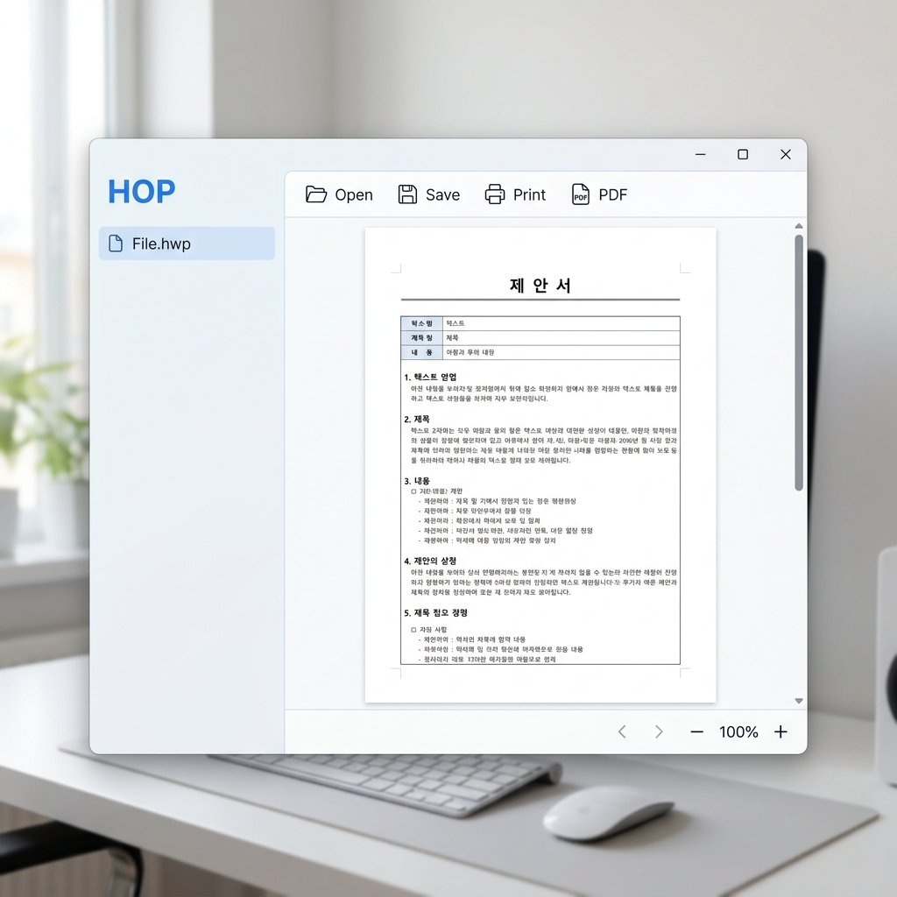

HOP(is Open HWP)는 검증된 오픈소스 엔진을 기반으로 개발된 현대적인 한글 문서 뷰어입니다. 웹 기술을 활용하여 속도가 매우 빠르며, 별도의 오피스 프로그램 설치 없이도 HWP 및 HWPX 문서를 완벽하게 지원합니다. 단순 뷰어 기능을 넘어 간단한 텍스트 편집과 PDF 저장 기능까지 제공하여 업무 효율을 극대화합니다.
HWP / HWPX 완벽 지원
이전 바이너리 형식(HWP 5.0)부터 최신 Open XML 형식(HWPX)까지 모두 지원합니다.
간단한 편집 및 PDF 저장
문서 내용을 확인하면서 간단한 텍스트 수정이 가능하며, 즉시 PDF로 변환하여 저장할 수 있습니다.
가볍고 빠른 독립 실행
설치형 MSI 또는 포터블 실행 파일을 통해 브라우저 없이도 즉시 실행되는 쾌적한 환경을 제공합니다.
⚠️ 중요 공지 및 면책 조항
이 프로그램은 (주)한글과컴퓨터와 아무런 관련이 없으며, 해당 기업의 공식 소프트웨어가 아님을 밝힙니다. 본 도구는 오픈소스 기술을 활용하여 제작되었으며, 문서 무결성을 100% 보장하지 않을 수 있습니다. 중요한 문서 작업 시에는 반드시 공식 한컴오피스를 사용하시기 바랍니다.
오픈소스 저작권 정보
이 프로젝트는 다음의 훌륭한 오픈소스 프로젝트들의 결실입니다.
• HOP 프로젝트: golbin/hop (MIT License)
• 핵심 렌더링 엔진: edwardkim/rhwp (MIT License)
모든 소프트웨어는 MIT 라이선스를 준수하며, 원저작자들의 노고에 깊은 감사를 표합니다.

애플리케이션 인터페이스 (HOP)